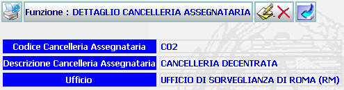

GENERALITA'
DETTAGLIO CANCELLERIA ASSEGNATARIA: La funzione, consente di visualizzare i dati di una cancelleria assegnataria ed effettuare su di essa alcune operazioni.
LE MASCHERE VIDEO
La funzione in esame viene realizzata attraverso l'utilizzo della seguente maschera che riporta gli elementi descrittivi della cancelleria assegnataria :

COME FARE PER ...
| Per modificare i dati inseriti relativi alla cancelleria assegnataria, l'amministratore deve (N.B. Questa operazione può essere effettuata solo dall'amministratore che ha effettuato l'inserimento della cancelleria assegnataria corrente): |
Cliccare sul pulsante
 ;
si aprirà la maschera
modifica cancelleria assegnataria
che permette di
effettuare le modifiche volute.
;
si aprirà la maschera
modifica cancelleria assegnataria
che permette di
effettuare le modifiche volute.
| Per cancellare la cancelleria assegnataria e tutti i dati relativi l'amministratore deve (N.B. Questa operazione può essere effettuata solo dall'amministratore che ha effettuato l'inserimento della cancelleria assegnataria corrente): |
Cliccare sul pulsante
 ;verrà visualizzato il seguente messaggio:
;verrà visualizzato il seguente messaggio:

Cliccando sul pulsante
si annullerà l'operazione di cancellazione e si ritornerà alla pagina di dettaglio della cancelleria assegnataria.
Cliccando sul pulsante
il sistema visualizzerà il messaggio:

Per tornare alla pagina principale occorre agire sul pulsante
|
Per tornare alla pagina
precedente, l'amministratore deve cliccare sul pulsante
|
CAMPI
Nella maschera non sono presenti campi digitabili.
PULSANTI
Sono presenti i pulsanti
 ,
,
,
,
,
,
 che fanno parte del gruppo di
pulsanti di "Uso Comune".
che fanno parte del gruppo di
pulsanti di "Uso Comune".
N.B. I pulsanti
e
sono presenti solo se chi ha effettuato il login è lo stesso amministratore che
ha effettuato l'inserimento
della
cancelleria
assegnataria corrente